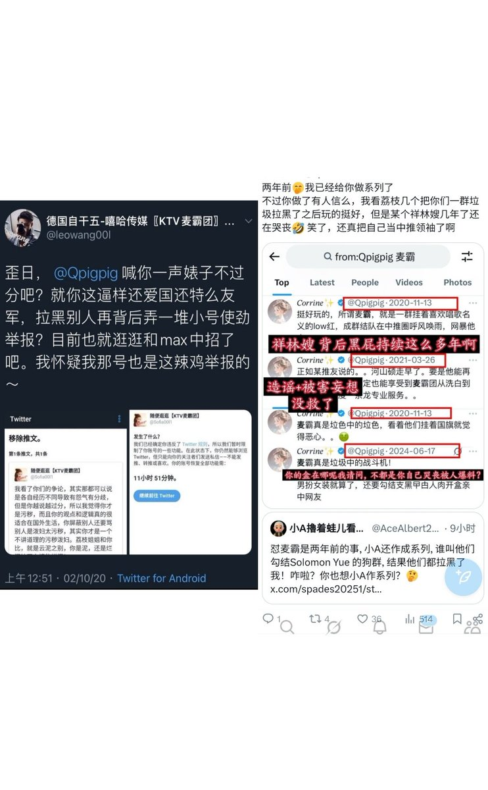
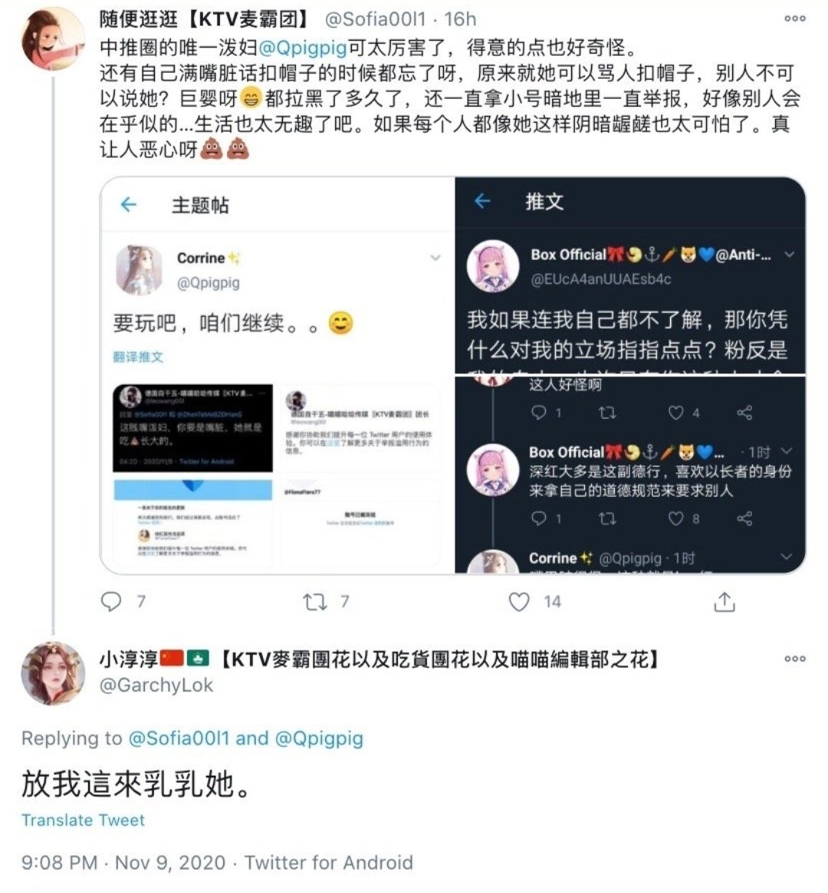
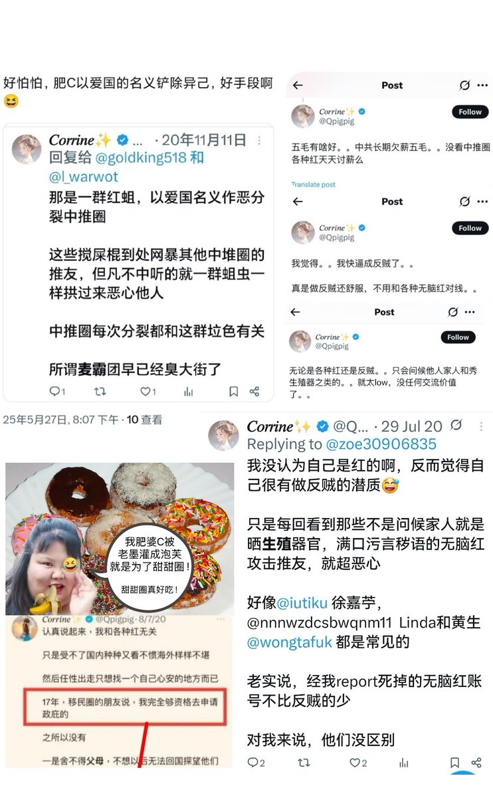
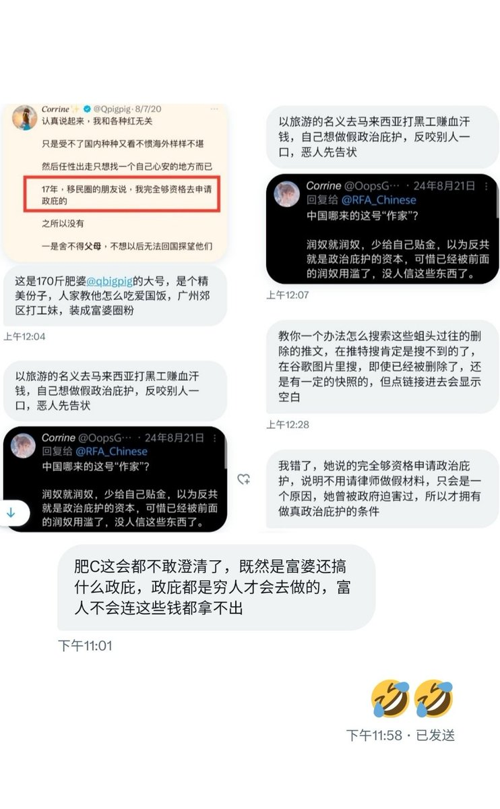

@luo88761462 @jusirthree 过街老鼠





＃抽象生物鉴赏
中推圈著名泼妇:肥婆Corrine【pigpig】
很多反贼误以为他是粉红大V，实际不算
肥婆C跟程浩南一样，两面三刀，表面粉红实则只是为了掐流量，背地里搞小动作迫害爱国群体，其实类似肮脏行为被台独和粉红同时看不起很正常
毕竟这种人不是立场问题，是人品有问题，放哪都是过街老鼠 https://t.co/EJyfsRkZIG
中推圈著名泼妇:肥婆Corrine【pigpig】
很多反贼误以为他是粉红大V，实际不算
肥婆C跟程浩南一样，两面三刀，表面粉红实则只是为了掐流量，背地里搞小动作迫害爱国群体，其实类似肮脏行为被台独和粉红同时看不起很正常
毕竟这种人不是立场问题，是人品有问题，放哪都是过街老鼠 https://t.co/EJyfsRkZIG